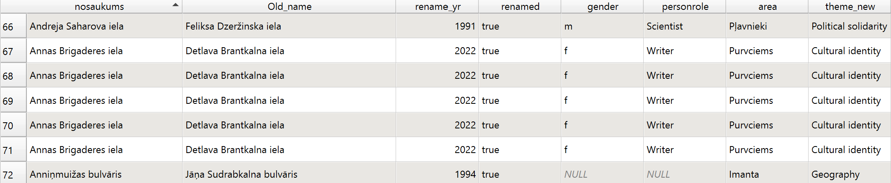

Our Dataset and its Structure

The captaset for this project is built based on the existing dataset from GEO RIGA titled Riga Streets and Addresses. The existing fields in the attribute table included the current names of the streets, details of the decisions made by the Riga Municipality (such as renaming or creating), the decision date, and ID. The dataset we used was downloaded on the 22nd of May, 2025; up until this date, the dataset was updated daily.
For our project, we added the following attributes to the attribute table: renamed (true/false), year renamed, old name, trigger, the theme of the renaming (i.e. is the name purely geographical (Hipokrata iela next to the Riga main hospital, Rododendronu iela next to the Botanical Garden), memorization — named after a person who lived or worked on this street (Žaņa Lipkes iela named after a Righteous Among Nations in the former ghetto of Riga), cultural identity — named after state-building concepts or activists, the field in which they were active in (educators, writers, military actors etc.), gender of the person the street is named after to see the possible efforts to correct the historical gender imbalance, area of the city the street is located in.
This is an example of the attribute table fields:
To narrow the scope of the project, we decided to focus on renaming events from the Perestroika period (after 1987) to May 2025, with particular attention to two key historical periods that significantly influenced urban toponymy in Riga: the years following Latvia’s regaining of independence in 1991 and the wave of renamings triggered by geopolitical shifts after the annexation of Crimea in 2014 and the start of the full-scale Russian invasion of Ukraine in 2022. Our captaset contains 115 unique entries.
To the best of our knowledge, our dataset is unique: decisions on street renaming made before the digital era are preserved only in undigitized municipal documents. They are not part of any publicly available database. To fill these gaps, we supplemented the GEO RIGA data with information from a printed encyclopedia Rīgas ielu, laukumu, parku un tiltu nosaukumu rādītājs [Index of Riga street, square, park and bridge names] (2000), allowing us to reconstruct missing historical details. This enriched dataset provides a foundation for analyzing patterns of urban toponymy in Riga and opens the possibility of including the city in broader comparative research on street naming practices across Europe.
In the future, the dataset could be expanded to include other types of named public spaces in Riga—such as bridges, parks, and squares—allowing for a more comprehensive analysis of urban naming practices across the city. It is also possible to expand the project to include oral histories and residents’ attitudes toward street renaming, particularly in light of Riga’s multilingual and multicultural character. This would offer insight into how different communities interpret naming changes and the symbolic significance they attach to specific names.